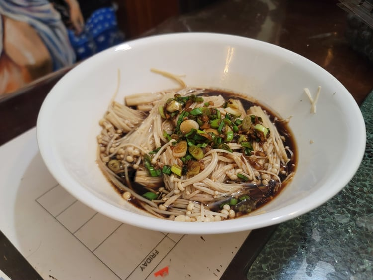

Enoki Mushrooms with Garlic Scallion Sauce

Ingredients:
- 14 oz Enoki Mushrooms, trimmed 1 inch away from roots
- 2 tbsp Oil
- 2 cloves Garlic, minced
- 3 tbsp Light soy sauce
- 1/2 tsp Sugar
- 1 Scallion, finely chopped
Instructions:
- Bring a pot of water to a boil. Blanch the mushrooms for 1 minute and then transfer to a serving bowl.
- In a very small saucepan, heat the oil over medium heat. Add in the garlic and cook for about 10 seconds. Then add in the soy sauce, sugar, and scallion. Once the sauce comes to a boil, remove from heat immediately.
- Pour the sauce over the mushrooms. Serve immediately.